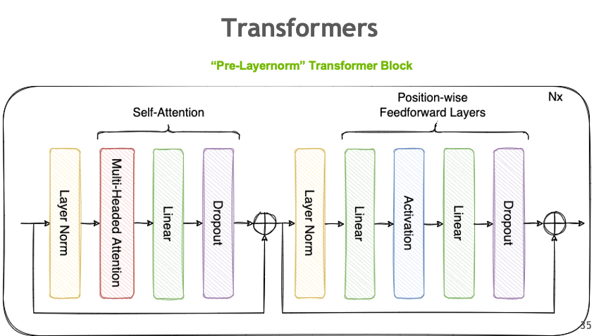
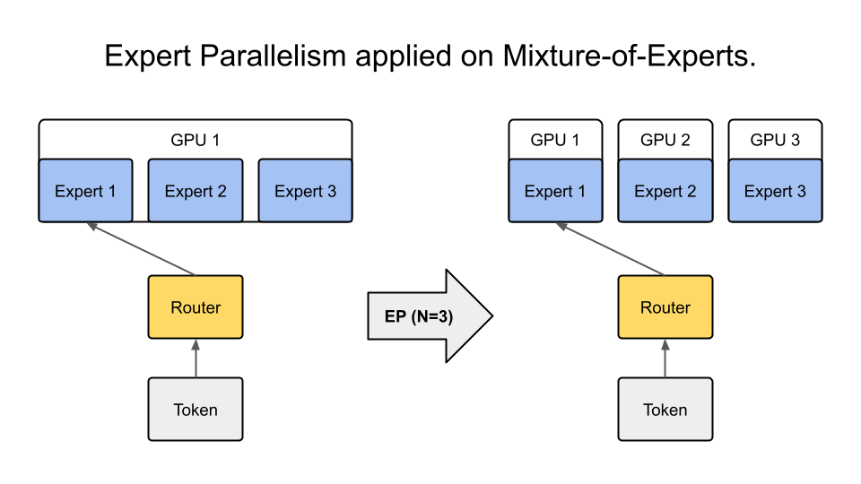

并行策略指南¶
Megatron Bridge 支持多种数据并行和模型并行的深度学习工作负载部署方法，这些方法可以任意组合使用。这些并行策略通过模型提供者类进行配置，并利用 Megatron Core 的实现来获得性能和内存效率。
数据并行¶
数据并行（Data Parallelism, DP）将模型复制到多个 GPU 上。数据批次在 GPU 之间均匀分配，数据并行的 GPU 独立处理它们。虽然计算工作负载有效地分布在 GPU 之间，但需要在训练步骤之间进行 GPU 间通信以保持模型副本的一致性。
分布式数据并行¶
分布式数据并行（Distributed Data Parallelism, DDP）通过在每次参数更新之前跨数据并行 GPU 同步参数梯度来保持模型副本的一致性。更具体地说，它使用全归约（all-reduce）通信集合操作对所有模型副本的梯度进行求和。
 图：分布式数据并行使用全归约操作跨多个 GPU 同步梯度。
图：分布式数据并行使用全归约操作跨多个 GPU 同步梯度。
分布式优化器¶
分布式优化器 是一种内存优化的数据并行部署方法。它将优化器状态和高精度主参数分片到数据并行 GPU 上，而不是复制它们。在参数优化器步骤中，每个数据并行 GPU 更新其参数分片。由于每个 GPU 需要自己的梯度分片，分布式优化器对参数梯度执行归约-分散（reduce-scatter）操作，而不是对它们进行全归约。然后，更新后的参数分片在数据并行 GPU 之间进行全收集（all-gather）。这种方法显著减少了大规模 LLM 训练的内存需求。
启用数据并行¶
在 Megatron Bridge 中，DDP 是默认的并行部署方法。GPU 的总数对应于 DP 组的大小，使用模型并行训练 LLM 会减少 DP 组的大小。
要启用分布式优化器，请配置 {py:class}bridge.training.config.OptimizerConfig 和 {py:class}bridge.training.config.DistributedDataParallelConfig
from megatron.bridge.training.config import ConfigContainer, DistributedDataParallelConfig, OptimizerConfig
optimizer_config = OptimizerConfig(
optimizer="adam",
lr=3e-4,
weight_decay=0.1,
adam_beta1=0.9,
adam_beta2=0.95,
use_distributed_optimizer=True,
clip_grad=1.0,
)
ddp_config = DistributedDataParallelConfig(use_distributed_optimizer=True)
config = ConfigContainer(
ddp=ddp_config,
optimizer=optimizer_config,
# ... 其他配置参数
)
有关更多优化器选项，请参阅 {py:class}bridge.training.config.OptimizerConfig API 文档。
模型并行¶
模型并行（Model Parallelism, MP）是一种分布式模型部署方法，它将模型参数分区到多个 GPU 上，以减少每个 GPU 的内存需求。Megatron Bridge 通过 Megatron Core 支持各种模型并行方法，这些方法可以混合使用以最大化 LLM 训练性能。
张量并行¶
张量并行（Tensor Parallelism, TP）是一种模型并行分区方法，它将单个层的参数张量分布在多个 GPU 上。除了减少模型状态内存使用外，它还节省了激活内存，因为每个 GPU 的张量尺寸缩小了。然而，减少的每个 GPU 张量尺寸由于每个 GPU 内核工作负载较小而增加了 CPU 开销。

图 1：张量并行将单个层的参数分布在多个 GPU 上。 图 2：张量并行如何分割权重矩阵和同步计算的详细视图。
图 2：张量并行如何分割权重矩阵和同步计算的详细视图。
启用张量并行¶
要在 Megatron Bridge 中启用 TP，请在模型提供者中配置 tensor_model_parallel_size 参数。此参数决定了模型张量被分区到的 GPU 数量。
from megatron.bridge.models import GPTModelProvider
from megatron.bridge.training.config import ConfigContainer
# 配置具有张量并行的模型
model_config = GPTModelProvider(
tensor_model_parallel_size=2, # 在 2 个 GPU 上启用 TP
# ... 其他模型参数
)
config = ConfigContainer(
model=model_config,
# ... 其他配置参数
)
实现张量并行¶
Megatron Bridge 通过 Megatron Core 的实现集成了 TP。有关详细的 API 用法和其他配置，请查阅 Megatron Core 开发者指南。
管道并行¶
管道并行（Pipeline Parallelism，PP）是一种将神经网络的连续层或分段分配给不同 GPU 的技术。这种划分允许每个 GPU 顺序处理网络的不同阶段。
 图：管道并行将连续层分布在多个 GPU 上，以流水线方式处理批次。
图：管道并行将连续层分布在多个 GPU 上，以流水线方式处理批次。
启用管道并行¶
要在 Megatron Bridge 中使用管道并行，请在模型配置中设置 pipeline_model_parallel_size 参数。此参数指定模型层分布在其上的 GPU 数量。
from megatron.bridge.models import GPTModelProvider
from megatron.bridge.training.config import ConfigContainer
# 配置具有管道并行的模型
model_config = GPTModelProvider(
pipeline_model_parallel_size=4, # 将层分布在 4 个 GPU 上
# ... 其他模型参数
)
config = ConfigContainer(
model=model_config,
# ... 其他配置参数
)
交错式管道并行调度¶
为了最小化管道气泡，每个 GPU 上的计算可以划分为多个层子集（称为模型块），而不是单个连续块。通过设置 virtual_pipeline_model_parallel_size 来启用此功能：
model_config = GPTModelProvider(
pipeline_model_parallel_size=4,
virtual_pipeline_model_parallel_size=2, # 每个管道阶段 2 个模型块
# ... 其他模型参数
)
有关此方法的更多见解，请参阅详细博客：扩展语言模型训练。
实现管道并行¶
Megatron Bridge 的 PP 实现利用了 Megatron Core 的功能。有关 PP 的更详细 API 用法和配置，请访问 Megatron Core 开发者指南。
专家并行与专家混合模型¶
专家并行（Expert Parallelism，EP）是一种模型并行类型，它将专家混合模型（Mixture of Experts，MoE）的专家分布在 GPU 上。与其他模型并行技术不同，EP 仅应用于专家层，不影响其余层的并行映射。
MoE 是一种机器学习技术，其中多个专门模型（专家，通常是多层感知器）被组合起来解决复杂任务。每个专家专注于特定的子任务或领域，而门控网络根据当前输入动态激活最合适的专家。

图：专家并行将 MoE 专家分布在多个 GPU 上，同时保持其他层被复制。基本 MoE 配置¶
要在 Megatron Bridge 中启用 MoE，请在模型提供程序中配置基本的 MoE 参数：
from megatron.bridge.models import GPTModelProvider
# 配置基本 MoE 模型
model_config = GPTModelProvider(
num_moe_experts=8, # MoE 模块中的专家数量
moe_router_topk=2, # 每个令牌激活的专家数量
moe_ffn_hidden_size=8192, # 专家 FFN 层的隐藏大小
# ... 其他模型参数
)
启用专家并行¶
要启用 EP，请在模型配置中设置 expert_model_parallel_size。例如，如果模型有八个专家（num_moe_experts=8），那么设置 expert_model_parallel_size=4 将导致每个 GPU 处理两个专家。专家数量应能被专家并行大小整除。
# 配置具有专家并行的 MoE 模型
model_config = GPTModelProvider(
num_moe_experts=8,
expert_model_parallel_size=4, # 将 8 个专家分布在 4 个 GPU 上（每个 GPU 2 个专家）
# ... 其他模型参数
)
启用专家张量并行¶
要启用专家张量并行（Expert Tensor Parallelism，ETP），请在模型配置中设置 expert_tensor_parallel_size：
model_config = GPTModelProvider(
num_moe_experts=8,
expert_model_parallel_size=4,
expert_tensor_parallel_size=2, # 在每个专家内部应用张量并行
# ... 其他模型参数
)
高级 MoE 功能¶
Megatron Bridge 为 MoE 模型提供了多种高级优化，以提高在现代 GPU 架构上的性能。
DeepEP 和 HybridEP 优化¶
DeepEP 和 HybridEP 是高性能的 MoE 令牌分发器，可提高特定 GPU 架构上的吞吐量和效率：
- DeepEP：针对 Ampere、Hopper、B200 和 B300 GPU 进行了优化
- HybridEP：针对配备 NVL72 的 GB200、GB300 以及 Ampere、Hopper、B200、B300 GPU 进行了优化
这些分发器用优化的“flex”分发器取代了标准的令牌路由机制，为 MoE 工作负载提供了更好的性能。
启用 DeepEP：
from megatron.bridge.models import GPTModelProvider
from megatron.bridge.training.flex_dispatcher_backend import apply_flex_dispatcher_backend
model_config = GPTModelProvider(
num_moe_experts=8,
expert_model_parallel_size=4,
# ... 其他模型参数
)
# 应用 DeepEP 优化
apply_flex_dispatcher_backend(model_config, moe_flex_dispatcher_backend="deepep")
启用 HybridEP：
from megatron.bridge.models import GPTModelProvider
from megatron.bridge.training.flex_dispatcher_backend import apply_flex_dispatcher_backend
model_config = GPTModelProvider(
num_moe_experts=8,
expert_model_parallel_size=4,
# ... 其他模型参数
)
# 应用 HybridEP 优化
apply_flex_dispatcher_backend(model_config, moe_flex_dispatcher_backend="hybridep")
GPU 架构要求：
- DeepEP: Ampere (SM 8.x), Hopper (SM 9.x), B200, B300
- HybridEP: GB200, GB300 with NVL72, Ampere (SM 8.x), Hopper (SM 9.x), B200, B300
系统会自动验证 GPU 兼容性，如果当前硬件不支持该调度器，则会发出警告。
用于负载均衡的令牌丢弃¶
令牌丢弃通过容量因子平衡专家间的工作负载，从而提升 MoE 性能。此功能允许模型在专家过载时丢弃令牌，防止掉队者问题并提高整体吞吐量。
from megatron.bridge.models import GPTModelProvider
from megatron.bridge.training.utils.moe_token_drop import apply_moe_token_drop
model_config = GPTModelProvider(
num_moe_experts=8,
moe_router_topk=2,
moe_token_dispatcher_type="alltoall", # 令牌丢弃所需
moe_router_load_balancing_type="aux_loss", # 所需的负载均衡类型
# ... 其他模型参数
)
# 应用带容量因子的令牌丢弃
apply_moe_token_drop(
model_config,
moe_expert_capacity_factor=1.0, # 每个专家的容量乘数
moe_pad_expert_input_to_capacity=True, # 将输入填充至容量长度
)
配置参数：
moe_expert_capacity_factor：控制每个专家可以处理的最大令牌数。因子为 1.0 意味着每个专家恰好可以处理其按比例分配的令牌份额。较低的值（例如 0.8）会丢弃更多令牌，但能改善负载均衡。moe_pad_expert_input_to_capacity：启用时，将专家输入填充至容量长度，以保持一致的批次大小。
要求：
- 令牌调度器必须为
alltoall或alltoall_seq - 负载均衡类型必须为
aux_loss、seq_aux_loss或none
权衡：
在不平衡的 MoE 模型中，令牌丢弃可以将训练吞吐量提高 10-30%，但如果过于激进可能会影响收敛。建议从容量因子 1.0 开始，并根据需要逐步降低。
完整的 MoE 配置示例¶
以下是一个完整的示例，展示如何配置一个带有高级优化的 MoE 模型：
from megatron.bridge.models import GPTModelProvider
from megatron.bridge.training.config import ConfigContainer
from megatron.bridge.training.flex_dispatcher_backend import apply_flex_dispatcher_backend
from megatron.bridge.training.utils.moe_token_drop import apply_moe_token_drop
# 配置带有专家并行的 MoE 模型
model_config = GPTModelProvider(
num_layers=32,
hidden_size=4096,
num_attention_heads=32,
# MoE 配置
num_moe_experts=8, # 总共 8 个专家
moe_router_topk=2, # 每个令牌激活 2 个专家
moe_ffn_hidden_size=8192, # 专家 FFN 隐藏维度
moe_token_dispatcher_type="alltoall", # 令牌调度器类型
moe_router_load_balancing_type="aux_loss", # 负载均衡
# 专家并行
expert_model_parallel_size=4, # 在 4 个 GPU 上分布专家
expert_tensor_parallel_size=2, # 在每个专家内部应用 TP
# ... 其他模型参数
)
# 应用 DeepEP 优化（适用于 Ampere/Hopper GPU）
apply_flex_dispatcher_backend(model_config, moe_flex_dispatcher_backend="deepep")
# 应用令牌丢弃以进行负载均衡
apply_moe_token_drop(
model_config,
moe_expert_capacity_factor=1.0,
moe_pad_expert_input_to_capacity=True,
)
config = ConfigContainer(
model=model_config,
# ... 其他配置参数
)
专家并行实现¶
Megatron Bridge 的 EP 实现使用了 Megatron Core 的功能。更多 MoE 实现细节，请参阅 Megatron Core MoE 层。
激活分区¶
在 LLM 训练中，需要大量内存空间来存储网络层的输入激活。Megatron Bridge 通过 Megatron Core 提供了有效的激活分布方法，这对于训练具有长序列长度或大单 GPU 微批次大小的 LLM 至关重要。
序列并行¶
序列并行（Sequence Parallelism，SP）通过沿 Transformer 层的序列维度在多个 GPU 之间分配计算负载和激活内存，扩展了张量级模型并行。这种方法对于之前尚未并行化的层部分特别有用，可提升整体模型性能和效率。
 图：序列并行将序列维度分布在多个 GPU 上，减少了激活内存。
图：序列并行将序列维度分布在多个 GPU 上，减少了激活内存。
启用序列并行¶
要在 Megatron Bridge 中使用 SP，请在模型配置中将 sequence_parallel 参数设置为 True。请注意，此功能仅在张量并行大小（tensor_model_parallel_size）大于 1 时有效。
from megatron.bridge.models import GPTModelProvider
# 配置启用序列并行的模型
model_config = GPTModelProvider(
tensor_model_parallel_size=2, # 序列并行的必要条件
sequence_parallel=True, # 启用序列并行
# ... 其他模型参数
)
实现序列并行¶
Megatron Bridge 中的 SP 实现利用了 Megatron Core 的功能。要深入了解序列并行如何集成到 Megatron Core 架构中，您可以查看源代码：Megatron-LM 序列并行源代码。
上下文并行¶
上下文并行（Context Parallelism，CP）是一种通过沿序列维度划分输入张量，在多个 GPU 上并行处理神经网络激活的方法。与划分特定层激活的序列并行（SP）不同，CP 划分所有层的激活。
CP 对于训练长上下文模型至关重要，因为它允许模型通过将序列激活分布在多个 GPU 上来处理更长的序列。这种方法减少了处理长序列时的内存占用和计算成本。
启用上下文并行¶
要在 Megatron Bridge 中激活 CP，请在模型配置中设置 context_parallel_size 参数。此参数指定模型序列激活分布所跨的 GPU 数量。
from megatron.bridge.models import GPTModelProvider
# 配置启用上下文并行的模型
model_config = GPTModelProvider(
context_parallel_size=2, # 在 2 个 GPU 上分布序列
# ... 其他模型参数
)
对于长上下文训练场景，上下文并行特别有效，并且对于处理超出单个 GPU 内存容量的序列至关重要。
实现上下文并行¶
Megatron Bridge 利用 Megatron Core 和 Transformer Engine 的功能来高效实现 CP。在前向传播期间，每个 GPU 处理序列的一个片段，仅存储必要的键值（KV）对。在反向传播过程中，这些 KV 对通过使用高级通信方案（如 all-gather 和 reduce-scatter，在环形拓扑中转换为点对点通信）在 GPU 之间重新组装。这种方法在保持计算效率的同时，显著减少了内存占用。
有关更详细的技术信息和实现细节，请访问： - Megatron Core 上下文并行文档 - Megatron Core 对 Transformer Engine 的封装 - Transformer Engine 注意力模块
组合并行示例¶
Megatron Bridge 允许您组合多种并行策略，以实现最佳性能和内存效率：
from megatron.bridge.models import GPTModelProvider
from megatron.bridge.training.config import ConfigContainer, OptimizerConfig
# 配置使用多种并行策略的模型
model_config = GPTModelProvider(
# 模型并行
tensor_model_parallel_size=2, # 2 路张量并行
pipeline_model_parallel_size=4, # 4 路管道并行
virtual_pipeline_model_parallel_size=2, # 交错式管道
# 激活分区
sequence_parallel=True, # 启用序列并行（要求 TP > 1）
context_parallel_size=2, # 2 路上下文并行
# 专家并行（用于 MoE 模型）
num_moe_experts=8, # 8 个专家
expert_model_parallel_size=4, # 在 4 个 GPU 上分布专家
# ... 其他模型参数
)
# 配置分布式优化器
optimizer_config = OptimizerConfig(
optimizer="adam",
use_distributed_optimizer=True, # 启用分布式优化器 # ... 其他优化器参数 )
config = ConfigContainer( model=model_config, optimizer=optimizer_config, # ... 其他配置参数 )
data_parallel_size = world_size / (tensor_model_parallel_size × pipeline_model_parallel_size × context_parallel_size) ```例如，总共有 32 个 GPU，使用上述配置：
- tensor_model_parallel_size = 2
- pipeline_model_parallel_size = 4
- context_parallel_size = 2
- data_parallel_size = 32 / (2 × 4 × 2) = 2
策略选择指南¶
选择合适的组合取决于模型大小、硬件拓扑和序列长度。
按大小划分的稠密模型¶
| 模型大小 | GPU 数量 | 推荐的起始点 |
|---|---|---|
| < 1B | 1-8 | 仅使用 DP |
| 1-10B | 8-16 | TP=2-4 + DP |
| 10-70B | 16-64 | TP=4-8 + PP=2-4 + DP |
| 70-175B | 64-256 | TP=8 + PP=4-8 + DP |
| 175-500B | 256-1024 | TP=8 + PP=8-16 + CP=2 + DP |
MoE 模型¶
MoE 模型与稠密模型有根本区别：每个 token 只激活一小部分参数，因此 TP 通常可以保持在 1 或 2。EP 是主要的扩展维度。
| 总参数 / 激活参数 | 典型布局 |
|---|---|
| < 20B | 仅 EP (TP=1, PP=1) |
| 20-100B | TP=1-2 + PP=2-4 + EP=8-16 |
| 100-500B | TP=2-4 + PP=8-16 + EP=8-32 |
| 500B+ | TP=2 + PP=16 + EP=32-64 |
按硬件拓扑¶
- 具有 NVLink 的单节点：在节点内最大化 TP（最高可达 TP=8）。
- 具有 InfiniBand 的多节点：将 TP 保持在节点内，跨节点使用 PP。
- 有限网络（以太网）：最小化 TP，跨节点扩展时优先使用 PP。
按序列长度¶
| 序列长度 | 建议 |
|---|---|
| < 2K | 标准 TP + PP + DP |
| 2K-8K | 添加 SP (sequence_parallel=True) |
| 8K-32K | 添加 CP=2 |
| 32K+ | 添加 CP=4-8，考虑分层 CP |
有关配置组合并行、故障排除布局和内存估算的操作细节，请参阅 并行策略技能。
配置指南¶
内存优化¶
- 使用分布式优化器以减少优化器状态内存
- 使用张量并行时启用序列并行以减少激活内存
- 长序列训练时使用上下文并行
- 对于无法放入单个 GPU 的超大模型，考虑使用管道并行
性能优化¶
- 张量并行在单个节点内（高带宽）效果最佳
- 管道并行可以跨节点工作，但需要仔细调整批次大小
- 上下文并行对于长上下文场景至关重要
- 专家并行专用于 MoE 模型，应与专家数量匹配
- DeepEP/HybridEP 在支持的 GPU 架构上提供优化的 MoE token 分发
兼容性¶
- 序列并行要求
tensor_model_parallel_size > 1 - 专家并行要求 MoE 模型 (
num_moe_experts > 0) - DeepEP 需要 Ampere、Hopper、B200 或 B300 GPU
- HybridEP 需要 GB200、GB300 with NVL72，或 Ampere、Hopper、B200、B300 GPU
- Token dropping 需要
alltoall或alltoall_seqtoken 分发器 - 所有并行策略都可以组合使用，但总并行度必须能被世界大小整除
相关制品¶
- 操作技能：skills/perf-techniques/parallelism-strategies/SKILL.md — 启用、陷阱、内存估算、验证
- 知识卡片：skills/perf-techniques/parallelism-strategies/card.yaml — 结构化元数据和验证状态